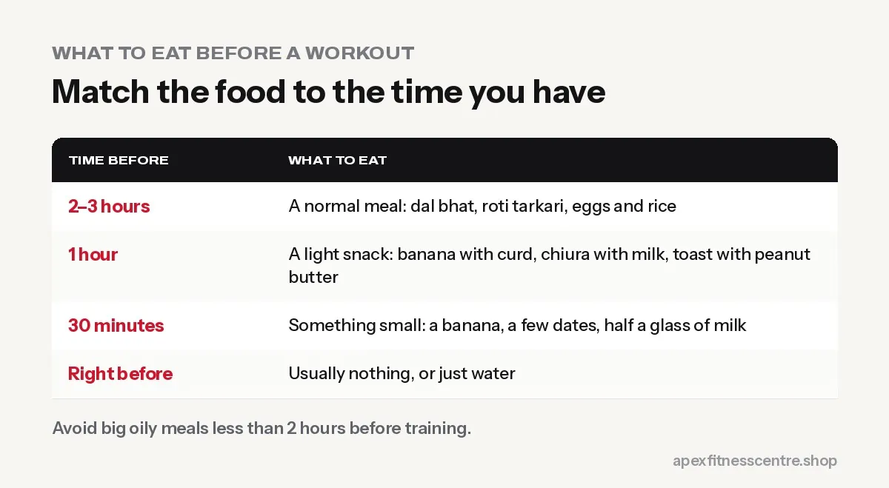

What to Eat Before a Workout: 12 Easy Nepali Pre-Workout Meals
What to eat before the gym for energy, without feeling heavy: timing, simple Nepali food options for morning and evening workouts, and what to avoid.

The best pre-workout meal gives you energy (carbohydrates) plus a little protein, is easy to digest, and is eaten at the right time: a full meal 2 to 3 hours before, or a small snack 30 to 60 minutes before.
You do not need special products. Ordinary Nepali food works perfectly.
Timing guide
| Time before training | What to eat |
|---|---|
| 2–3 hours | A normal meal: dal bhat, roti tarkari, eggs and rice |
| 1 hour | A light snack: banana with curd, chiura with milk, toast with peanut butter |
| 30 minutes | Something small and easy: a banana, a few dates, half a glass of milk |
| Right before | Usually nothing, or just water |

12 pre-workout options
For morning workouts (4:30 to 8 AM)
- Banana + a glass of milk: quick energy and some protein.
- Chiura with curd: traditional, light, easy on the stomach.
- Toast or roti with peanut butter.
- Dates or raisins with a few nuts: if you cannot eat much early.
- Oats cooked in milk: if you have 60 to 90 minutes.
- Black coffee + banana: a simple “pre-workout” many lifters swear by.
For evening workouts (4:30 to 8:30 PM)
- Normal lunch at noon followed by a small snack around 3 to 4 PM.
- Boiled chana chatpate: carbs and protein together.
- Fruit with a bowl of curd.
- Egg sandwich or 2 eggs with roti.
- Sweet potato (sakarkhand) or boiled potatoes: easy carbohydrates.
- High-protein oats with milk.
What to avoid right before training
- Big, heavy meals less than 2 hours before: you may feel sick or slow.
- Very oily or fried food: pakoda, samosa, sel roti fried in lots of oil.
- Lots of fibre or beans just before if they upset your stomach.
- Fizzy drinks: can cause bloating.
- Trying a new food on an important day.
Can you train on an empty stomach?
Many people train fine in the morning without eating, especially for light cardio. But for heavy lifting or long sessions, most people perform better with a small snack. If you feel dizzy, weak or shaky when training fasted, eat something small.
Do you need a pre-workout supplement?
No. A banana and some caffeine from black coffee or tea do much of the same job. If you do use a pre-workout product, read our guide on whether pre-workout is safe first.
Don’t forget water
Drink a glass of water in the hour before training. See how much water you should drink.
Sample timelines
Early morning session (5:00 AM): - 4:30 AM: 1 banana and a few sips of water, or black tea with 2 biscuits - 5:00–6:15 AM: train - 6:30–7:00 AM: proper breakfast with protein (eggs, milk, or curd and chiura)
Evening session (6:00 PM): - 1:00 PM: normal lunch (dal bhat with a protein side) - 4:30 PM: small snack, such as roasted chana, a banana and milk, or bread with peanut butter - 6:00–7:15 PM: train - 8:00 PM: dinner
For fat loss vs muscle gain
- Fat loss: keep the pre-workout snack small (about 100–200 kcal) and count it in your daily calories. A banana or a glass of milk is enough.
- Muscle gain: use the pre-workout meal to add calories: oats with milk and banana, or a larger serving of rice and dal 2–3 hours before.
In both cases, your total food for the day matters far more than the exact timing.
Frequently asked questions
Is banana good before a workout?
Yes. It is easy to digest and gives quick energy. Add milk or curd for some protein.
Should I eat protein before the gym?
A little protein before training is helpful but not essential. What matters most is your total protein across the day.
What should I eat before a morning gym session if I’m not hungry?
Something very small: a banana, a few dates, or half a glass of milk 20 to 30 minutes before.
How long after eating can I work out?
About 2 to 3 hours after a full meal, or 30 to 60 minutes after a light snack.
Is tea or coffee okay before the gym?
Yes. A cup of black tea or coffee 30–60 minutes before training can help you feel more alert. Avoid a lot of sugar, and don’t have it late in the evening if it affects your sleep.
Sources
- International Society of Sports Nutrition position stand: nutrient timing (Kerksick et al., 2017)
- International Society of Sports Nutrition position stand: protein and exercise (Jäger et al., 2017)
General information, not medical advice. People with diabetes should plan workout meals with their doctor.
General information, not medical advice. Ask a doctor if you have a health condition. Results vary from person to person.
Comments
Loading comments…